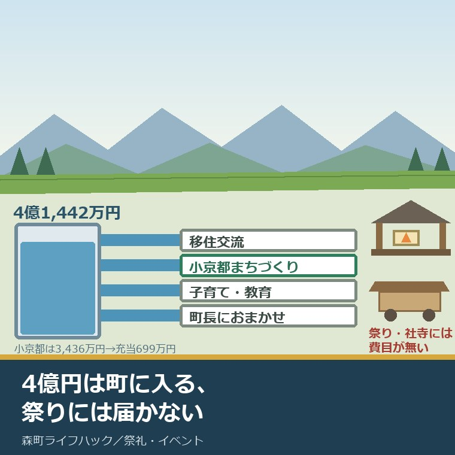
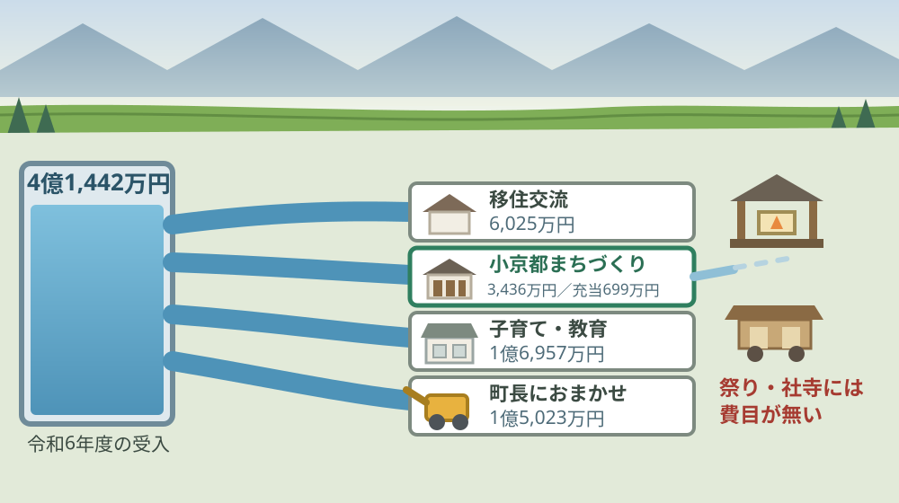
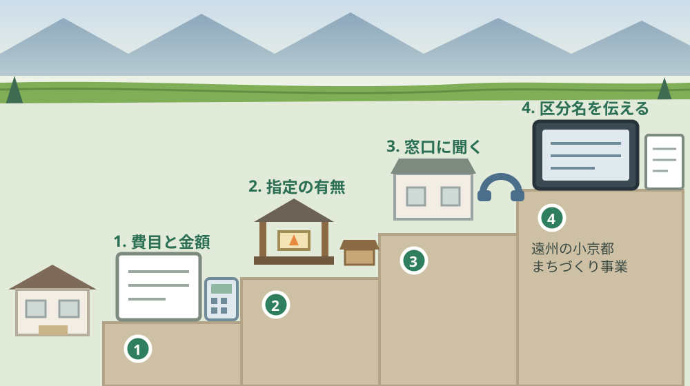

森町のふるさと納税4.1億円｜祭りと文化財に届く道

この記事の要点
Q. 地区の祭りの寄付集めが年々きつくなっています。森町のふるさと納税を、祭りや文化財へ回してもらう道はありますか。
A. 寄附する側は使い道を4区分から選べ、祭りと文化財に近いのは「遠州の小京都まちづくり事業」です。ただし森町公式によれば、令和6年度にこの区分へ寄せられた3,436万円のうち当年度の充当は2事業・699万円。祭りや社寺の名前は、5年分の充当事業一覧に出てきません。まず地区の必要額を見積りにしてください。
静岡県周智郡森町（遠州森町）の地区で、祭りの会計や氏子総代を引き受けている。寄付を集める先の家が、毎年少しずつ減っている。この記事は、そういう立場の方に向けて書いています。
その状況で、ふるさと納税の話が出てくるのは自然です。森町には年に4億円を超えるお金が、町外から入っています。その一部が祭りや社寺に回らないか、と考えるのは当然の発想です。
結論を先に書くと、道はあります。ただし、いま公表されている充当先の一覧に、祭りも社寺も出てきません。期待だけを書いても役に立たないので、数字を全部並べます。
今日は2026年8月22日。森町公式のふるさと納税実績報告が更新されたのは2026年3月3日で、載っているのは令和6年度までの実績です。
順に、公表されている内容から並べます。数字を並べたあとで、それが1世帯あたり・1地区あたりいくらになるかを計算します。
公式情報から確定できること
2026年8月22日時点で、森町公式サイトから確認できたことを並べます。出典は記事の末尾に載せています。
一つ目。令和6年度の受入は3,425件・414,420,000円です。森町公式のふるさと納税実績報告によれば、これが直近の公表値です。約4億1,442万円になります。
二つ目。使い道は4区分から選べます。森町公式の森町ふるさと納税のページによれば、移住交流促進活性化事業、遠州の小京都まちづくり事業、子育て・教育関連事業、町長におまかせの4つです。
三つ目。区分ごとの令和6年度の受入額は次のとおりです。移住交流促進活性化事業が349件・60,254,000円、遠州の小京都まちづくり事業が401件・34,362,000円、子育て・教育関連事業が1,210件・169,571,000円、町長におまかせが1,465件・150,233,000円です。
四つ目。寄せられたお金は、いったん基金に入ります。同ページは「皆様からお寄せいただいたふるさと納税は、ふるさと応援基金に積立て、各事業の実施に活用させていただいております」としています。
五つ目。令和6年度に小京都まちづくり事業へ充当されたのは2事業です。同ページによれば、遠州の小京都リノベーション推進事業が5,090,000円、遠州の小京都推進事業が1,897,000円。合計6,987,000円です。
六つ目。移住交流の区分には10事業が並んでいます。つながる森町学生ふるさと定期便事業3,582,000円、集落×移住者マッチング事業528,000円、森町ふるさと交流会事業541,000円、住もうよ森町新婚さん応援事業5,699,000円、結婚新生活支援事業90,000円などです。
七つ目。同じ区分に、空き家の事業が3本入っています。森町空き家予防抑制対策実施体制構築委託事業594,000円、空き家等利活用促進支援事業2,627,000円、空き家除去事業1,500,000円です。
八つ目。子育て・教育の区分では、小中学校ICT推進事業が29,367,000円と最も大きい額です。森っ子就学応援金15,140,000円、摩耶保育園委託料5,297,000円、ときわ保育園委託料3,997,000円などが続きます。
九つ目。町長におまかせの区分には、額の大きい事業が並びます。町道改築工事38,254,000円、地域包括ケア寄附講座設置事業33,000,000円、森町小中学校跡地利活用検討業務委託19,030,000円、森町体験の里指定管理料11,000,000円などです。
十番目。令和6年度の充当事業一覧に、祭り・社寺・文化財という名称の事業はありません。同ページに並ぶ全事業を数えても、祭礼や文化財の保存修理を名乗る費目は見当たりませんでした。
十一番目。5年分をさかのぼっても、近いものは1本です。令和5年度の町長におまかせの区分に「藤江勝太郎顕彰事業2,251,000円」があります。人物の顕彰であり、祭礼や社寺の維持ではありません。
十二番目。小京都まちづくり事業の受入額は、件数が増えても減っています。同ページによれば、令和2年度326件・31,964,000円、令和3年度410件・60,521,000円、令和4年度340件・37,114,000円、令和5年度340件・36,300,000円、令和6年度401件・34,362,000円です。
十三番目。町全体の受入額も、令和3年度がピークです。令和2年度396,786,000円、令和3年度821,164,000円、令和4年度484,473,000円、令和5年度440,410,000円、令和6年度414,420,000円と推移しています。
十四番目。寄附の入口は17のポータルサイトです。森町公式によれば、ふるさとチョイス、楽天ふるさと納税、ふるなび、さとふる、JALふるさと納税、ANAのふるさと納税など複数のサイトから申し込めます。
十五番目。森町の世帯数は6,763世帯です。森町公式の月別人口によれば、2026年8月1日現在の人口は16,422人（男8,213人・女8,209人）、世帯数は6,763世帯です。
十六番目。文化財の側の数も分かっています。森町公式によれば、森町の国指定文化財は5件（建造物1件・民俗4件）、県指定文化財は11件（工芸5件・絵画書跡2件・天然記念物2件・建造物2件）です。
十七番目。担当窓口は分かれています。ふるさと納税は町の企画担当窓口（0538-85-6305）、文化財は社会教育課文化振興係（0538-85-1114）、人口統計は住民生活課住民係（0538-85-6312）です。

この絵で描きたかったのは、お金が足りないのではなく、通り道が引かれていないという点です。4億円は町に入っています。祭りの側に水路が掘られていないだけです。掘るのは、たいてい受け取る側の仕事になります。
森町の暮らしに置き換えると、1世帯あたりいくらか
ここからは、公表された金額を割り戻します。私の計算であることを先に断っておきます。
令和6年度の受入414,420,000円を、森町の6,763世帯で割ります。1世帯あたり61,300円。町の外から、1世帯あたりこれだけのお金が入っている計算になります。
小京都まちづくり事業だけを見ます。34,362,000円を6,763世帯で割ると、1世帯あたり5,100円。ここまでは「集まった額」の話です。
当年度に充当された額で割り直します。6,987,000円を6,763世帯で割ると、1世帯あたり1,000円。集まった額の5分の1です。
1件あたりも出します。受入414,420,000円を3,425件で割ると、1件あたり約121,000円。小京都まちづくり事業は34,362,000円を401件で割って、1件あたり約85,700円です。
この差は、私が家の査定でやっている作業と同じです。総額で止めず、1世帯あたり・1軒あたりまで割る。そこまで割らないと、地区の会計は自分の数字として見られません。
もう一つ、仮の計算をします。秋葉山常夜灯が残る森町の地区は20です。仮に当年度の小京都まちづくり事業の充当額6,987,000円を20地区で均等に割ると、1地区あたり約349,000円になります。
この仮定は現実の配分ではありません。ただ、地区が「いくらの話をしているのか」を掴むには使えます。屋根1つ、幕1枚、太鼓の張替え1回。地区の見積りは、たいていこの桁です。
灯籠と鞘堂が県の認定した遺産の一部になっている点は、別の記事で整理しました。認定の範囲と担い手の話は、しずおか遺産「秋葉信仰と街道」に森町がどう入っているかの記事に書いています。
良い点：この仕組みの、よくできているところ
まず、森町のふるさと納税のよくできているところを数えます。批判の前に置くのは、私の書き方の順番です。
一つ目。充当した事業を、名称と金額まで公表しています。令和6年度なら25本の事業名が、それぞれ千円単位で載っています。ここまで書いている自治体は多くありません。
二つ目。5年分を1ページに並べています。令和2年度から令和6年度までが同じ表に入っているので、増えたのか減ったのかを自分で確かめられます。
三つ目。使い道を4区分に絞ってあります。選択肢が20個あると、寄附する側は結局「おまかせ」を選びます。実際、令和6年度も件数が最も多いのは町長におまかせの1,465件です。
四つ目。小京都まちづくり事業という区分が残っています。子育てと移住だけに寄せる自治体が多いなかで、まちなみと歴史の区分を残していること自体が、地区にとっての足がかりです。
五つ目。基金に積み立てる形をとっています。その年に使い切らない設計なので、大きな支出が要る年に回せます。屋根の葺き替えのような、数年に一度の支出とは相性がいい形です。
注文したい点：公表情報だけでは埋まらないところ
その上で、一事業者として注文したい点を並べます。町の担当も限られた人数で動いていることは承知の上です。
一つ目。受入額と充当額の差が説明されていません。令和6年度の受入は414,420,000円、私が充当事業を足すと211,786,000円です。差の内訳（返礼品や事務にかかる費用、基金への積み増し）は、このページからは読み取れません。
二つ目。小京都まちづくり事業の2本の中身が分かりません。リノベーション推進事業と小京都推進事業。名称だけでは、まちなみの改修なのか、催しの運営費なのかが判断できません。地区が相談に行く先も決まりません。
三つ目。祭りと社寺の受け皿が用意されていません。4区分のどれも、祭礼や文化財の維持を名指ししていません。名指しがない費目には、寄附する側も選びようがありません。
四つ目。基金の残高が公表されていません。積み立てる設計なら、いくら残っているかが要ります。残高が分かれば、地区は「今年は出るか」を自分で判断できます。
五つ目。地区から申請する道筋が示されていません。一事業者としては、A4で1枚、「地区の行事や社寺の修理に使える町の制度」を並べた案内があると助かります。窓口が3つに分かれている現状では、最初の電話をどこにかけるかで詰まります。

対案・結論：今日、地区の会計担当が確かめられること
結論を急がないと決めたうえで、今日から動ける順番を書きます。順番はイラストのとおりです。
| 順番 | 確かめること | 確認先 |
|---|---|---|
| 1 | 今後3年で要る費目と金額（屋根・幕・太鼓・電気） | 地区の会計簿と、過去の修理の領収証 |
| 2 | 対象が指定文化財かどうか | 森町 社会教育課文化振興係 0538-85-1114 |
| 3 | 使える町の制度があるか | 町の企画担当窓口 0538-85-6305 |
| 4 | ふるさと納税の使い道の区分名 | 森町公式の森町ふるさと納税のページ（4区分） |
| 5 | 地区の出身者・関係者の連絡先 | 地区の名簿。転出した世帯の宛先を優先して埋める |
| 6 | 寄附ではなく事業として立てられるか | 町の担当窓口と、地区の総会の議事録 |
1は、今日できます。紙に費目と金額を書き出すだけです。「屋根の修理」ではなく「拝殿の屋根の葺き替え・約◯◯万円」まで書きます。ここが空欄のままだと、どの窓口でも話が止まります。
2は電話1本です。指定を受けているかどうかで、使える制度がまるごと変わります。未指定なら、まちなみや景観の側から入る道を探すことになります。
3と4は、同じ日にできます。制度の有無を聞き、あわせて使い道の区分名を正確に控えます。区分名を間違えて伝えると、寄附は別の事業に流れます。
5は、地区の仕事です。転出した世帯の宛先を埋め直すのが、いちばん効きます。ふるさと納税は、その土地を離れた人が使う制度だからです。
祭りの当番と寄付が地区でどう動くかは、別の記事で数えました。八月に動き出す当番と寄付の実際は、十一月の森の祭りは八月に当番と寄付が動き出すという記事にまとめています。
祭りを支える側の負担そのものを整理したい方には、別の記事があります。金と人の両面からの見方は祭りを支える側の負担を数えた記事に書きました。
当日の出店で現金を作る道もあります。ただし出す品名によって許可と届出が分かれます。その線引きは祭りの模擬店は届出か許可かを整理した記事に書いています。
地区に残す記録
ここからは、確認した内容を紙1枚に残すための項目です。次の会計担当が同じことを調べ直さないためのものです。
書き留めるのは、今後3年の費目と金額、対象の指定区分、問い合わせた窓口と日付、担当者から言われた条件、次に確認する期限です。この5つで、引き継ぎができます。
あわせて、町の企画担当窓口の電話番号（0538-85-6305）、社会教育課文化振興係の電話番号（0538-85-1114）、地区の口座と会計の締め日、寄附を呼びかけた相手の一覧を並べておきます。
文化財の区分そのものを先に押さえたい方には、別の記事があります。森町の文化財を暮らしと負担の側から見た整理は森町の文化財に関する記事にまとめました。
実家の名義、境界、農地、道路まで含めて順に整理したい方は、ふじがおか実家カルテの森町相談窓口もご利用ください。住所が分かれば、建物と敷地のどちらについても、確認する順番を整理できます。
大石の視点
ここからは、私（大石浩之）の個人の考えです。公的な事実とは分けてお読みください。この件について、私自身が森町の地区でふるさと納税の申請に関わった体験があるわけではありません。以下は公表資料を読んだうえでの私の見方です。
私は数字を見るとき、必ず割り戻します。4億1,442万円では、誰も動きません。1世帯61,300円、1件121,000円まで割って、初めて話ができます。不動産の査定でやっているのと同じ作業です。
その目で見ると、この記事でいちばん重い数字は4億円ではありません。小京都まちづくり事業に3,436万円が集まって、当年度の充当が699万円だったという差のほうです。2,737万円が、その年には動いていません。
ただし、これを「町がため込んでいる」と読むのは違います。受入額には返礼品や事務にかかる費用が含まれます。基金に積むのは、大きな支出に備える正しいやり方でもあります。差の内訳が公表されていない、というのが私の指摘です。
ここは正直に書きます。祭りと文化財に費目がないことが、町の意思なのか、単に誰も申請していないからなのか、私には判断がつきません。需要がないから費目がないのか、費目がないから申請が起きないのか。この順番が、公表資料からは分かりません。私はまだ、どちらとも言えずにいます。
それでも一つだけ言い切ります。金額の入っていない相談は、どの窓口でも先へ進みません。「祭りが大変です」では制度は動きません。「拝殿の屋根の葺き替えに◯◯万円」なら、動く可能性が出ます。
私の商売でも同じです。「実家をどうしよう」で来た相談は動きませんが、「解体の見積りが200万円だった」で来た相談は必ず動きます。金額は、話を前に進めるための道具です。
不動産の目で見ると、この話は人の移動と直結しています。ふるさと納税は、その土地を離れた人が使う制度です。森町から出た人の名簿を持っている組織は、実は地区が一番強い。氏子名簿と過去の寄付台帳は、そのまま関係人口の名簿です。
そこに一つだけ注意を添えます。名簿を寄附集めの道具として使うと、続きません。先に地区の様子を届けて、そのついでに使い道の区分名を書き添える。順番はこちらだと私は考えています。
森町の可能性は、まだ十分に残っていると私は見ています。4億円が町の外から入る仕組みは、すでにあるからです。足りないのは、そこから祭りと社寺へ引く水路のほうです。
結論が保留のままでも、確認済みの事実が一つ増えたなら、それは前進です。費目と金額が出た。使い道の区分名が分かった。どちらも、次の判断を軽くします。
まとめ
- 森町公式のふるさと納税実績報告によれば、令和6年度の受入は3,425件・414,420,000円（2026年8月22日確認）
- 使い道は移住交流促進活性化事業、遠州の小京都まちづくり事業、子育て・教育関連事業、町長におまかせの4区分から選べる
- 令和6年度の区分別受入は、移住交流349件・60,254,000円、小京都まちづくり401件・34,362,000円、子育て・教育1,210件・169,571,000円、町長におまかせ1,465件・150,233,000円
- 寄附は「ふるさと応援基金」に積み立てられ、そこから各事業に充当される
- 令和6年度に小京都まちづくり事業へ充当されたのは、遠州の小京都リノベーション推進事業5,090,000円と遠州の小京都推進事業1,897,000円の2本
- 令和6年度の充当事業一覧に、祭り・社寺・文化財という名称の事業はない
- 5年分をさかのぼると、令和5年度の町長におまかせに藤江勝太郎顕彰事業2,251,000円がある
- 小京都まちづくり事業の受入額は令和3年度の60,521,000円をピークに、令和6年度は34,362,000円まで下がっている（件数は410件から401件）
- 町全体の受入額も令和3年度821,164,000円がピークで、令和6年度は414,420,000円
- 寄附の入口はふるさとチョイス、楽天ふるさと納税、ふるなび、さとふるなど17のポータルサイト
- 森町公式の月別人口によれば、2026年8月1日現在の人口は16,422人、世帯数は6,763世帯
- 森町公式によれば、森町の国指定文化財は5件、県指定文化財は11件
- 私の計算では、受入414,420,000円は1世帯あたり61,300円、1件あたり約121,000円
- 私の計算では、小京都まちづくり事業の受入34,362,000円は1世帯あたり5,100円、当年度充当6,987,000円は1世帯あたり1,000円
- 私の計算では、令和6年度の充当事業を合計すると211,786,000円で、受入額との差の内訳は同ページからは読み取れない
よくある質問
Q1. 森町のふるさと納税は、使い道を選べますか。
A1. 森町公式によれば、寄附金の使い道は移住交流促進活性化事業、遠州の小京都まちづくり事業、子育て・教育関連事業、町長におまかせの4区分から選べます。祭りや文化財に最も近いのは遠州の小京都まちづくり事業です。ただし、その区分を選んでも、どの事業に充当するかを決めるのは町であり、祭りへ回る保証はありません。
Q2. 令和6年度に、祭りや文化財へ充てられた額はいくらですか。
A2. 森町公式のふるさと納税実績報告に載る令和6年度の充当事業一覧には、祭り・社寺・文化財という名称の事業がありません。遠州の小京都まちづくり事業の区分では、遠州の小京都リノベーション推進事業5,090,000円と遠州の小京都推進事業1,897,000円の2本が充当されています。これらの中に祭礼分が含まれるかどうかは、同ページからは読み取れません。
Q3. 地区の祭りに外部の資金を入れるには、どこから始めればよいですか。
A3. 順番は3つです。第一に、地区で必要な費目と金額を1年分の見積りにします。第二に、対象が町指定などの文化財に当たるかを森町の社会教育課文化振興係（0538-85-1114）に確認します。第三に、寄附を呼びかける相手に、使い道の区分名を正確に伝えます。事業として形になっていないものには、公費も寄附も付きません。
最後に一つだけ。ここに書いた受入額、区分別の内訳、充当事業の名称と金額、世帯数は、いずれも2026年8月22日時点で公表されている内容です。受入額と充当額の差の内訳、ふるさと応援基金の残高、遠州の小京都リノベーション推進事業と遠州の小京都推進事業の具体的な中身、地区の団体が申請できる制度の有無は、公表資料からは確認できていません。動く前に、必ず森町の企画担当窓口（0538-85-6305）と、社会教育課文化振興係（0538-85-1114）へご確認ください。
参考にした公式情報
- ふるさと納税実績報告／静岡県森町（令和6年度の受入が3,425件・414,420,000円であること、区分別受入が移住交流促進活性化事業349件・60,254,000円、遠州の小京都まちづくり事業401件・34,362,000円、子育て・教育関連事業1,210件・169,571,000円、町長におまかせ1,465件・150,233,000円であること、令和2年度396,786,000円・令和3年度821,164,000円・令和4年度484,473,000円・令和5年度440,410,000円と推移していること、小京都まちづくり事業の受入が令和2年度326件31,964,000円・令和3年度410件60,521,000円・令和4年度340件37,114,000円・令和5年度340件36,300,000円・令和6年度401件34,362,000円であること、「皆様からお寄せいただいたふるさと納税は、ふるさと応援基金に積立て、各事業の実施に活用させていただいております」と記載されていること、令和6年度に小京都まちづくり事業へ充当されたのが遠州の小京都リノベーション推進事業5,090,000円と遠州の小京都推進事業1,897,000円であること、同年度の充当事業に町道改築工事38,254,000円・地域包括ケア寄附講座設置事業33,000,000円・小中学校ICT推進事業29,367,000円・森町小中学校跡地利活用検討業務委託19,030,000円・森っ子就学応援金15,140,000円・森町体験の里指定管理料11,000,000円などが並ぶこと、令和5年度に藤江勝太郎顕彰事業2,251,000円が充当されていること、担当窓口の電話番号が0538-85-6305であることを2026年8月22日に確認。ページ更新日 2026年3月3日）
- 森町ふるさと納税／静岡県森町（寄附金の使い道が移住交流促進活性化事業・遠州の小京都まちづくり事業・子育て・教育関連事業・町長におまかせの4区分であること、寄附の入口としてふるさとチョイス・楽天ふるさと納税・ふるなび・さとふる・JALふるさと納税・ANAのふるさと納税・auPAYふるさと納税・ふるラボ・まいふる・Yahoo!ふるさと納税など17のポータルサイトが掲載されていること、申込方法としてクレジットカード決済・払込取扱票・現金の対応があること、担当窓口の電話番号が0538-85-6305であることを2026年8月22日に確認。ページ更新日 2026年8月5日）
- 森町の月別人口／静岡県森町（2026年8月1日現在の人口が16,422人（男8,213人・女8,209人）、世帯数が6,763世帯であること、森町人口統計表・人口集計表（1歳単位）・町名別人口統計表・行政区別人口統計表がPDFで掲載されていること、担当が住民生活課住民係（電話0538-85-6312）であることを2026年8月22日に確認。ページ更新日 2026年8月5日）
- 文化財／静岡県森町（森町の国指定文化財が5件（建造物1件・民俗4件）、県指定文化財が11件（工芸5件・絵画書跡2件・天然記念物2件・建造物2件）であること、遠江森町の舞楽が国指定（民俗）で指定年月日が昭和57年1月14日であること、担当が文化振興係（電話0538-85-1114）であることを2026年8月22日に確認。ページ更新日 2019年3月1日）
- 26 秋葉信仰と森町／静岡県森町（秋葉山常夜灯が下飯田・東組・鴨谷・大門・城下・薄場・草ヶ谷・中田・赤根・宮代東・大鳥居・黒石・西俣・北戸綿・谷川・粟倉・米倉・鍛冶島・黒田・三倉の20地区に現存すること、村人の手によって毎夜灯明がともされたこと、担当が社会教育課文化振興係（電話0538-85-1114）であることを2026年8月22日に確認。ページ更新日 2019年3月5日）

最終確認日：2026-08-22 ／ 本記事は公表情報と執筆者の見解を分けて記載しています。受入額と充当額の差の内訳、ふるさと応援基金の残高、遠州の小京都リノベーション推進事業および遠州の小京都推進事業の具体的な中身、地区の団体が申請できる制度の有無は、公表資料から確認できていません。制度・金額は変更されることがあります。動く前に、必ず森町の企画担当窓口および社会教育課文化振興係へご確認ください。